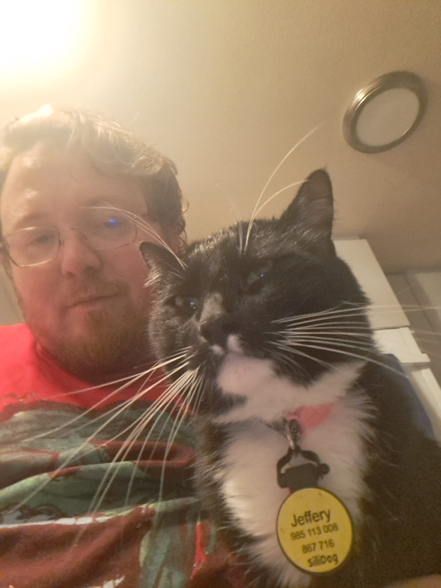
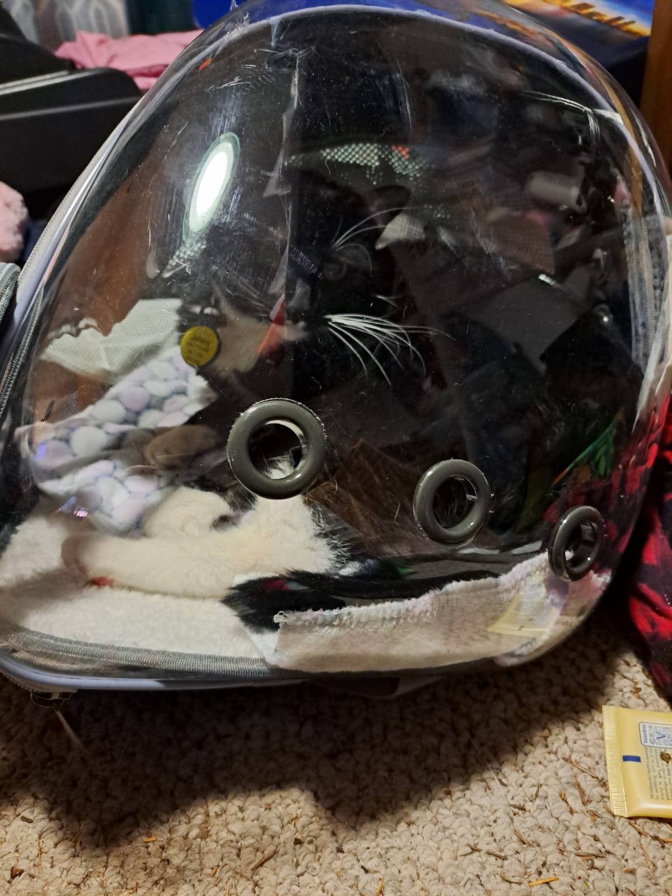
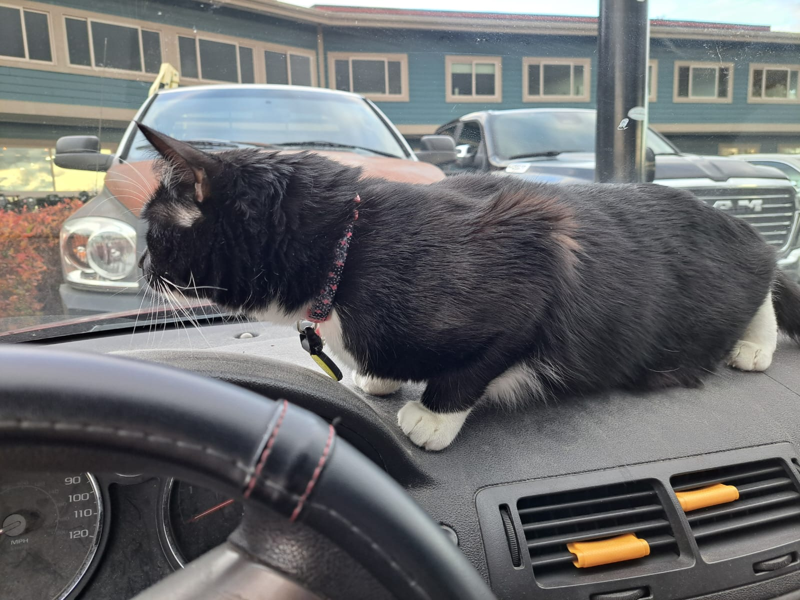
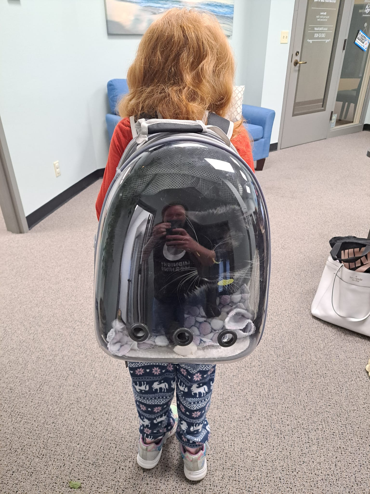

My name is Sam Henninger, I'm the creator of this site. Along with my associate Mr. Jeffery Clawmer.
He is the real taskmaster of this operation. He is in charge of meal breaks, making sure I am on time
for work and class and ensuring I find time to sleep.

Even from his office, he can watch me at all times.

In the field.

And why the website:
